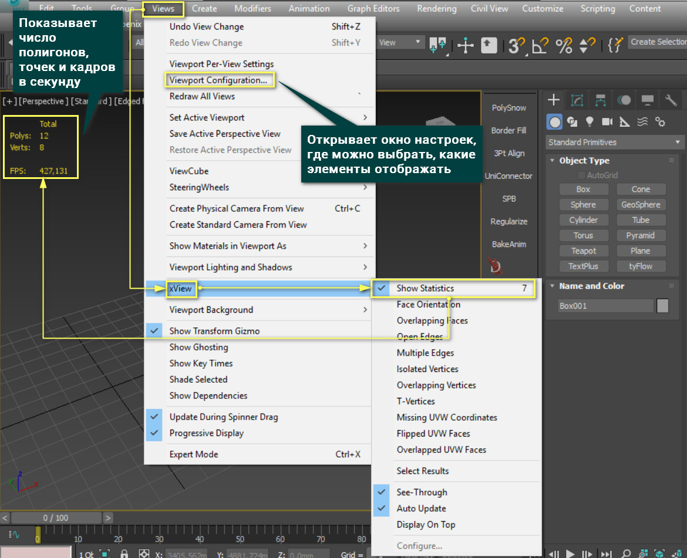
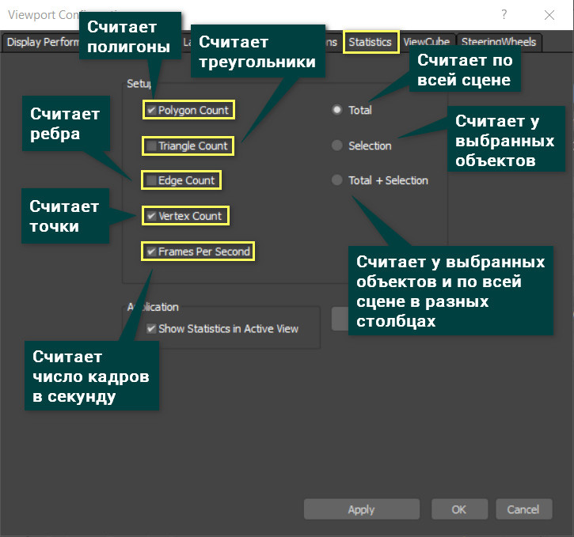
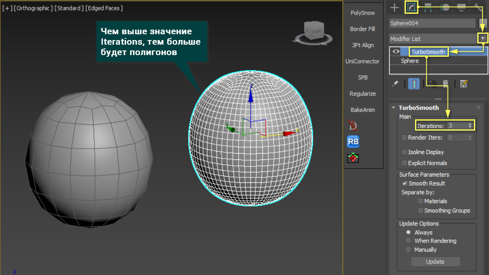
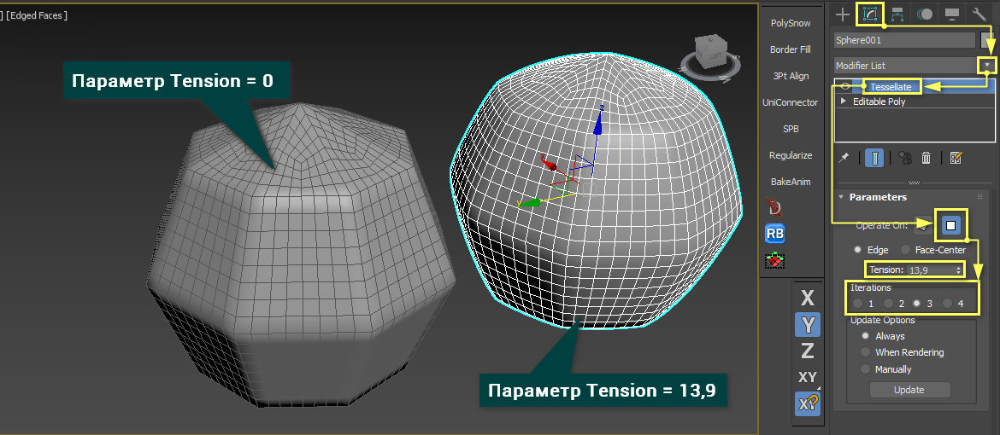
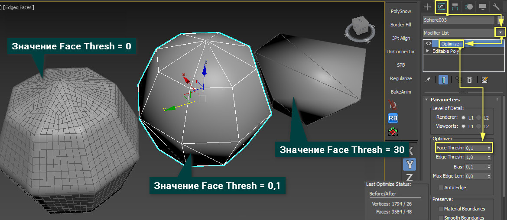
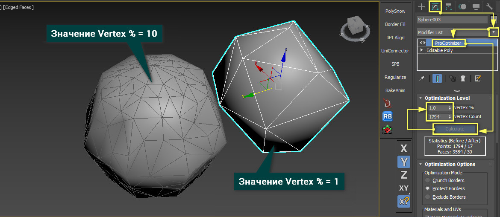
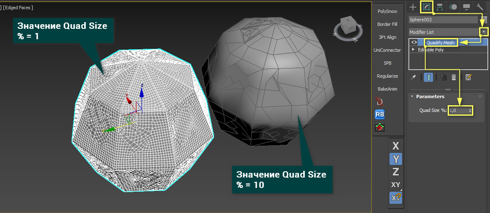

5 модификаторов, меняющие количество полигонов
По своей сути сетка — это набор полигонов. В 3ds Max вы можете управлять единичными полигонами или их группами. Но некоторые модификаторы позволяют пойти дальше и работать целиком со всей сеткой.
Ниже будут рассмотрены 5 модификаторов, которые можно поделить на 2 типа:
- делают сетку более плотной, увеличивая число полигонов (TurboSmooth, Tessellate)
- делают сетку менее плотной, уменьшая число полигонов (Optimize, ProOptimizer)
Отдельно стоит выделить модификатор
Quadify Mesh, так как он может работать в обе стороны. Все модификаторы можно найти в
Modify – Modifier List и найти по названию (можно ввести название текстом).
Так как число полигонов изменяется, то его понадобится отслеживать. Чтобы увидеть, сколько в сцене полигонов, нужно нажать клавишу «7» или включить функцию
Views – xView – Show Statistics.

Выбрать элементы для подсчета можно в окне Viewport Configuration – Statistics. Там можно выбрать полигоны (Polygon), треугольники (Triangle), ребра (Edge), точки (Vertex), число кадров в секунду (Frames Per Second). Также есть выбор, на каких объектам считать: на всех (Total), на выбранных (Selection), одновременно на всех и на выделенных (Total + Selection).

1. TurboSmooth
Turbosmooth крайне простой модификатор, который сглаживает объекты. Но его преимущество перед
Smooth или
OpenSubdiv в том, что сглаживание производится добавлением новых полигонов и изменением их положения. Хотя, возможности указанных модификаторов частично присутствуют, но рассматривать их мы не будем.
Главный параметр –
Iterations. Чем он выше, тем больше полигонов и более сглаженный объект. Часто этот модификатор используют для более тонкой доработки объекта, которая требует больше полигонов, чем грубая форма. Однако не стоит ставить слишком высокое значение. Из-за этого сцена может зависнуть.

2. Tessellate
Tessellate выполняет схожую с
TurboSmooth функция, но несколько иначе. Прежде всего, он имеет 2 типа построения новых ребер на сетке: на основе треугольных «фейсов» (Face) или полигонов (Polygons).
Пункты
Edge и Face-Center позволяют менять тип построения сетки, но Edge используется чаще. В отличие от
TurboSmooth, сглаживания почти не происходит, сетка просто уплотняется. Параметр
Tension чем-то похож на сглаживание. Но при больших значениях сглаживается только часть объекта, другая становится более жесткой. Параметр
Iteration влияет на плотность сетки: больше число - больше полигонов. Но, если нужно уплотнить сетку сильнее, чем при
Iteration = 4, придется добавить еще один такой же модификатор.

3. Optimize
Модификатор
Optimize облегчает сетку, в отличие от модификаторов выше. Самым важным параметром является
Face Thresh. Именно его значение показывает, насколько сильно будет уменьшено количество полигонов в процентах. Остальные параметры позволяют более тонко настраивать оптимизацию. В самом низу показано, сколько было точек и фейсов и сколько стало.

4. ProOptimizer
Принцип работы
ProOptimizer очень схож с
Optimize, но более автоматизирован. Он не имеет различных параметров настройки новых граней, из-за чего оптимизация менее гибкая. Но сам объект после оптимизации лучше сохраняет форму при меньшей трате времени на настройку. Лучше всего это будет видно на сложных объектах.
В разделе
Optimization Level находятся все главные параметры и информация. Сначала вы должны рассчитать оптимизацию кнопкой
Calculate, а затем поменять количество точек до результата, который вас устроит.
Statistic (Before / After) показывает, на сколько было уменьшено число точек и «фейсов».

5. Quadify Mesh
Инструмент
Quadify Mesh уникален тем, что он работает не на основе существующей сетки объекта, а создает новую. По простоте он не уступает ни одному перечисленному выше модификатору. Ведь он имеет всего один параметр!
Quad Size % отвечает за размеры квадратов, которые будут строиться на объекте. Значение это в процентах и рассчитывается относительно размера объекта. Значения изменяются от 0,2 до 100.
Модификатор очень хорош тем, что старается создать наиболее правильную топологию из прямоугольников. Особенно на углах объекта. Но не всегда получается автоматически создать только квадраты. Поэтому иногда на новой сетке можно встретить треугольники. Бывает и так, что модификатор может делать сетку крайне плохо. В таких ситуациях устоит уменьшить значение
Quad Size %.

Каждый из этих инструментов крайне сильно облегчает моделирование, но не стоит ими злоупотреблять. Иногда создание топологии вручную с помощью самых обычных инструментов Cut и Connect может дать лучший результат.